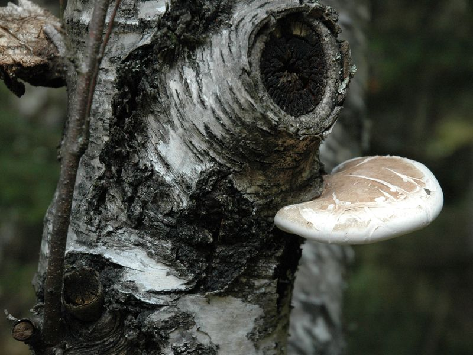

Birkensporling
Piptoporus betulinus
Häufigster Baumpilz im Moorwald ist der Birkenporling. Wir finden die weichen Konsolen ausschließlich auf Birken. Als Parasit bedroht der Pilz das Leben der Wirtsbäume, auf Totholz verursacht er eine rasch fortschreitende Braunfäule.